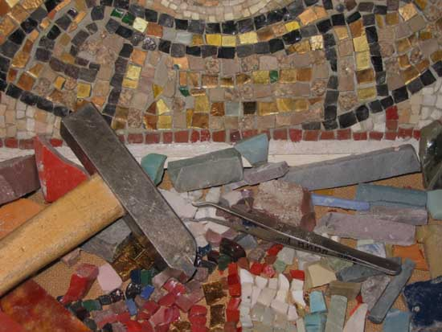

Добро пожаловать на сайт художника-мозаичиста Нины Сергеевой. Здесь Вы можете ознакомиться с монументальными и станковыми работами автора, купить понравившиеся работы, сделать заказ на выполнение мозаики и росписей. На сайте представлена информация об истории монументальной живописи, технологии изготовления мозаики и росписи, приведены полезные ссылки об искусстве, художественных магазинах и организациях, работает on-line магазин этюдов и пейзажей. Художник дает индивидуальные уроки мозаики и изобразительного искусства.